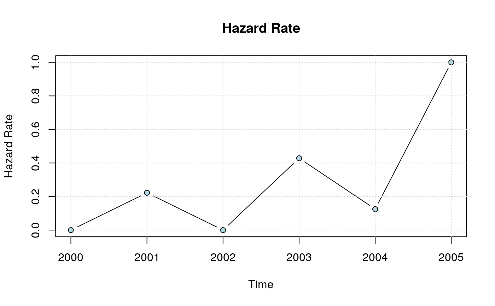

The hazard rate is the instantaneous probability of adoption at each time representing the likelihood members will adopt at that time (Allison 1984). The shape of the hazard rate indicates the pattern of new adopters over time. Rapid diffusion with convex cumulative adoption curves will have hazard functions that peak early and decay over time whereas slow concave cumulative adoption curves will have hazard functions that are low early and rise over time. Smooth hazard curves indicate constant adoption whereas those that oscillate indicate variability in adoption behavior over time.
hazard_rate(obj, no.plot = FALSE, include.grid = TRUE, ...) plot_hazard(x, ...) # S3 method for diffnet_hr plot(x, y = NULL, main = "Hazard Rate", xlab = "Time", ylab = "Hazard Rate", type = "b", include.grid = TRUE, bg = "lightblue", pch = 21, add = FALSE, ylim = c(0, 1), ...)
| obj | A \(n\times T\) matrix (Cumulative adoption matrix obtained from
|
|---|---|
| no.plot | Logical scalar. When TRUE, suppress plotting (only returns hazard rates). |
| include.grid | Logical scalar. When TRUE includes a grid on the plot. |
| ... | further arguments to be passed to the method. |
| x | An object of class |
| y | ignored. |
| main | Character scalar. Title of the plot |
| xlab | Character scalar. x-axis label. |
| ylab | Character scalar. y-axis label. |
| type | Character scalar. See |
| bg | Character scalar. Color of the points. |
| pch | Integer scalar. See |
| add | Logical scalar. When TRUE it adds the hazard rate to the current plot. |
| ylim | Numeric vector. See |
A row vector of size \(T\) with hazard rates for \(t>1\) of class diffnet_hr.
The class of the object is only used by the S3 plot method.
This function computes hazard rate, plots it and returns the hazard rate vector invisible (so is not printed on the console). For \(t>1\), hazard rate is calculated as
$$\frac{q_t - q_{t-1}}{n - q_{t-1}}$$
where \(q_i\) is the number of adopters in time \(t\), and \(n\) is the number of vertices in the graph.
In survival analysis, hazard rate is defined formally as
$$% \lambda(t)=\lim_{h\to +0}\frac{F(t+h)-F(t)}{h}\frac{1}{1-F(t)} % $$
Then, by approximating \(h=1\), we can rewrite the equation as
$$% \lambda(t)=\frac{F(t+1)-F(t)}{1-F(t)} % $$
Furthermore, we can estimate \(F(t)\), the probability of not having adopted the innovation in time \(t\), as the proportion of adopters in that time, this is \(F(t) \sim q_t/n\), so now we have
$$% \lambda(t)=\frac{q_{t+1}/n-q_t/n}{1-q_t/n} = \frac{q_{t+1} - q_t}{n - q_t} % $$
As showed above.
The plot_hazard function is an alias for the plot.diffnet_hr method.
Allison, P. (1984). Event history analysis regression for longitudinal event data. Beverly Hills: Sage Publications.
Wooldridge, J. M. (2010). Econometric Analysis of Cross Section and Panel Data (2nd ed.). Cambridge: MIT Press.
Other statistics: bass,
classify_adopters,
cumulative_adopt_count, dgr,
ego_variance, exposure,
infection, moran,
struct_equiv, threshold,
vertex_covariate_dist
Other visualizations: dgr,
diffusionMap, drawColorKey,
grid_distribution,
plot_adopters, plot_diffnet2,
plot_diffnet,
plot_infectsuscep,
plot_threshold,
rescale_vertex_igraph
# Creating a random vector of times of adoption toa <- sample(2000:2005, 20, TRUE) # Computing cumulative adoption matrix cumadopt <- toa_mat(toa)$cumadopt # Visualizing the hazard rate hazard_rate(cumadopt)